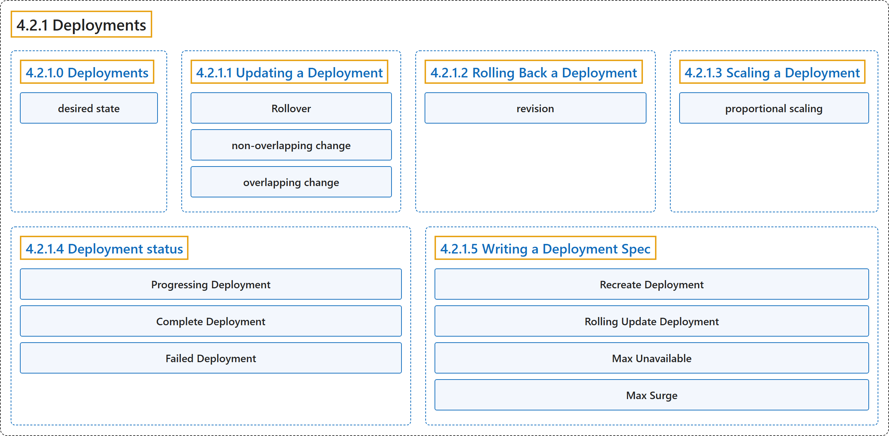

4.2.1 Deployments
Classification

Glossary
| Term | Definition | 中文翻译 | Source |
|---|---|---|---|
| 4.2.1 Deployments Deployment |
"A Deployment manages a set of Pods to run an application workload, usually one that doesn't maintain state." | Deployment 管理一组 Pod，用来运行一个应用工作负载，通常是不维护状态的工作负载。 | The Kubernetes Authors, n.d., "Deployments", para. 1 |
| 4.2.1.0 Deployments Deployment |
"A Deployment provides declarative updates for Pods and ReplicaSets." | Deployment 提供声明式更新，面向 Pod 和 ReplicaSet。 | The Kubernetes Authors, n.d., "Deployments", para. 2 |
| desired state 期望状态 |
(context) "You describe a desired state in a Deployment, and the Deployment Controller changes the actual state to the desired state at a controlled rate." | （语境）你在 Deployment 中描述期望状态，Deployment 控制器 会把实际状态变为期望状态，以受控的速率。 | The Kubernetes Authors, n.d., "Deployments", para. 3 |
| 4.2.1.1 Updating a Deployment 更新 Deployment |
(No definition) | （无定义） | The Kubernetes Authors, n.d., "Updating a Deployment" |
| Rollover 滚动覆盖 |
(context) "Each time a new Deployment is observed by the Deployment controller, a ReplicaSet is created to bring up the desired Pods." | （语境）Deployment 控制器每观察到一个新的 Deployment，就创建一个 ReplicaSet 来启动期望的 Pod。 | The Kubernetes Authors, n.d., "Rollover (aka multiple updates in-flight)", para. 1 |
| non-overlapping change 不重叠的变更 |
(context) "This is a non-overlapping change: the new Deployment will not "see" the old Pods (which lack the new label)" | （语境）这是一种不重叠的变更：新的 Deployment 将不会“看到”旧的 Pod（它们缺少新标签） | The Kubernetes Authors, n.d., "Label selector updates", para. 3 |
| overlapping change 重叠的变更 |
(context) "This is an overlapping change: the new, broader selector would match the old Pods." | （语境）这是一种重叠的变更：新的、更宽泛的选择算符会匹配旧的 Pod。 | The Kubernetes Authors, n.d., "Label selector updates", para. 5 |
| 4.2.1.2 Rolling Back a Deployment 回滚 Deployment |
(context) "Sometimes, you may want to rollback a Deployment; for example, when the Deployment is not stable, such as crash looping." | （语境）有时你可能想要回滚 Deployment，例如在 Deployment 不稳定时，比如崩溃循环。 | The Kubernetes Authors, n.d., "Rolling Back a Deployment", para. 1 |
| revision 修订版本 |
"A Deployment's revision is created when a Deployment's rollout is triggered. This means that the new revision is created if and only if the Deployment's Pod template (.spec.template) is changed, for example if you update the labels or container images of the template." |
Deployment 的修订版本在 Deployment 的上线被触发时创建。这意味着新的修订版本当且仅当 Deployment 的 Pod 模板（.spec.template）发生变更时才会创建，例如你更新了模板的标签或容器镜像。 |
The Kubernetes Authors, n.d., "Rolling Back a Deployment", Note, para. 1 |
| 4.2.1.3 Scaling a Deployment 扩缩 Deployment |
(No definition) | （无定义） | The Kubernetes Authors, n.d., "Scaling a Deployment" |
| proportional scaling 按比例扩缩 |
(context) "This is called proportional scaling." | （语境）这称为按比例扩缩。 | The Kubernetes Authors, n.d., "Proportional scaling", para. 1 |
| 4.2.1.4 Deployment status Deployment 状态 |
"A Deployment enters various states during its lifecycle." | Deployment 进入多种状态，贯穿其生命周期。 | The Kubernetes Authors, n.d., "Deployment status", para. 1 |
| Progressing Deployment 进行中的 Deployment |
(context) "Kubernetes marks a Deployment as progressing when one of the following tasks is performed:" | （语境）Kubernetes 把 Deployment 标记为进行中，当执行以下任一任务时： | The Kubernetes Authors, n.d., "Progressing Deployment", para. 1 |
| Complete Deployment 已完成的 Deployment |
(context) "Kubernetes marks a Deployment as complete when it has the following characteristics:" | （语境）Kubernetes 把 Deployment 标记为已完成，当它具备以下特征时： | The Kubernetes Authors, n.d., "Complete Deployment", para. 1 |
| Failed Deployment 失败的 Deployment |
(context) "Your Deployment may get stuck trying to deploy its newest ReplicaSet without ever completing." | （语境）你的 Deployment 可能会卡在部署最新 ReplicaSet 的过程中，始终无法完成。 | The Kubernetes Authors, n.d., "Failed Deployment", para. 1 |
| 4.2.1.5 Writing a Deployment Spec 编写 Deployment 规约 |
(context) "As with all other Kubernetes configs, a Deployment needs .apiVersion, .kind, and .metadata fields." |
（语境）与其他所有 Kubernetes 配置一样，Deployment 需要有 .apiVersion、.kind 和 .metadata 字段。 |
The Kubernetes Authors, n.d., "Writing a Deployment Spec", para. 1 |
| Recreate Deployment Recreate 策略 |
"All existing Pods are killed before new ones are created when .spec.strategy.type==Recreate." |
当 .spec.strategy.type==Recreate 时，先杀死所有现有 Pod，再创建新的 Pod。 |
The Kubernetes Authors, n.d., "Recreate Deployment", para. 1 |
| Rolling Update Deployment RollingUpdate 策略 |
"The Deployment updates Pods in a rolling update fashion (gradually scale down the old ReplicaSets and scale up the new one) when .spec.strategy.type==RollingUpdate." |
当 .spec.strategy.type==RollingUpdate 时，Deployment 以滚动更新方式更新 Pod（逐步缩容旧的 ReplicaSet、扩容新的 ReplicaSet）。 |
The Kubernetes Authors, n.d., "Rolling Update Deployment", para. 1 |
| Max Unavailable 最大不可用 |
".spec.strategy.rollingUpdate.maxUnavailable is an optional field that specifies the maximum number of Pods that can be unavailable during the update process." |
.spec.strategy.rollingUpdate.maxUnavailable 是一个可选字段，指定最多可以有多少个 Pod 在更新过程中不可用。 |
The Kubernetes Authors, n.d., "Max Unavailable", para. 1 |
| Max Surge 最大峰值 |
".spec.strategy.rollingUpdate.maxSurge is an optional field that specifies the maximum number of Pods that can be created over the desired number of Pods." |
.spec.strategy.rollingUpdate.maxSurge 是一个可选字段，指定最多可以有多少个 Pod 能在期望 Pod 数之上额外创建。 |
The Kubernetes Authors, n.d., "Max Surge", para. 1 |
References
The Kubernetes Authors. (n.d.). Deployments. Kubernetes Documentation. Retrieved October 31, 2026, from https://kubernetes.io/docs/concepts/workloads/controllers/deployment/